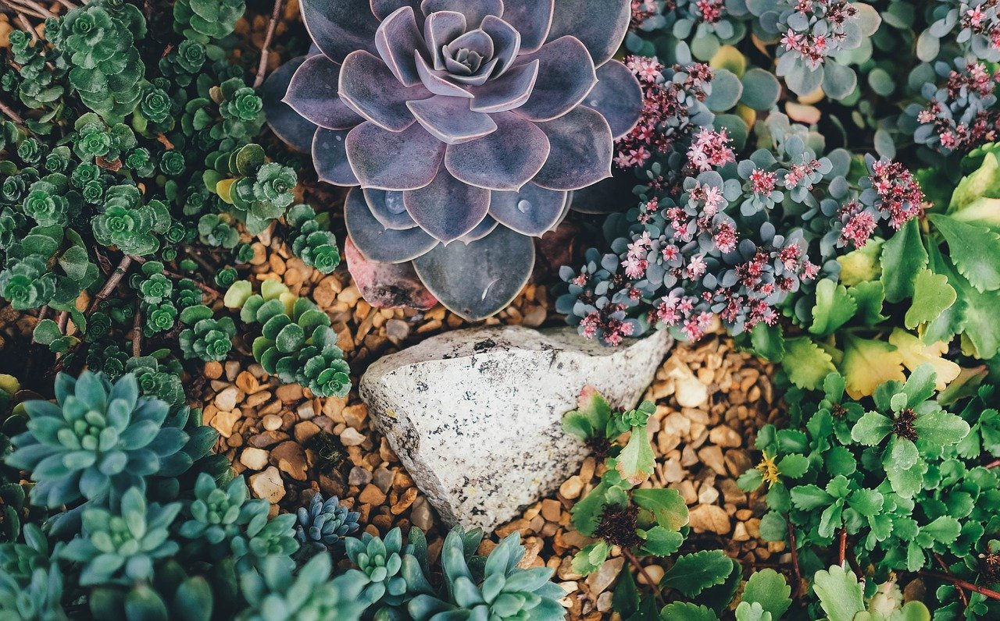
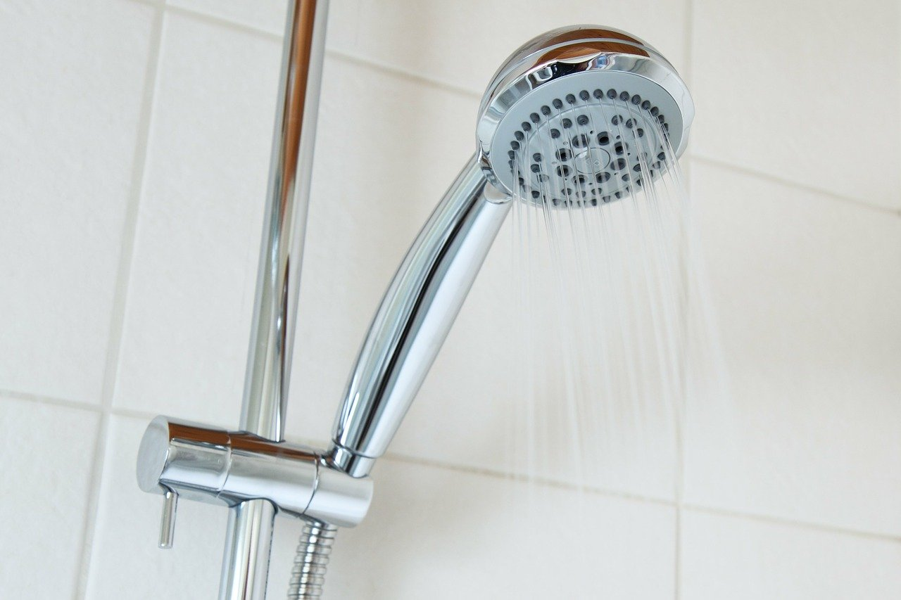
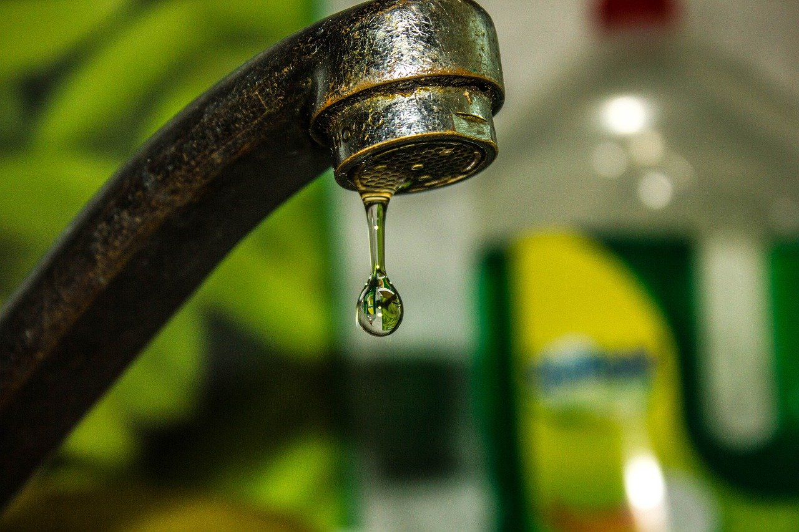

Take Action
It’s easy to reduce your water usage at home. Here are some simple ways to start.

Switch to drought-resistant plants and use half as much water as a lawn.

Take shorter showers to save 12.5 gallons of water per shower.

Fix leaks to save up to as much as 110 gallons of water each month.